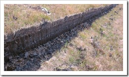

Note: this is part 2. Read part 1 of the trip here.
Early Saturday morning on Islay, and we are set to go on another adventure! After eating a delicious breakfast that our lovely host prepared for us, we were set to try and explore some more distilleries. Unfortunately there were no tours at Lagavulin and Ardbeg on a Saturday, so we decided to drive to the place where one of my most favorite pictures was taken: the Carraig Fhada Lighthouse.
 It was a relatively short drive, but the road eventually becomes almost undrivable. We parked our car outside the gates of the Carraig Fhada farm and continued on foot. The sea breeze blows into our faces as we walk slowly along the rocky path towards the lighthouse. It's so calm and peaceful out here&
It was a relatively short drive, but the road eventually becomes almost undrivable. We parked our car outside the gates of the Carraig Fhada farm and continued on foot. The sea breeze blows into our faces as we walk slowly along the rocky path towards the lighthouse. It's so calm and peaceful out here&
Fully recharged by the fresh air and breathtaking scenery we went back to the car. I quickly checked the little map we had and saw that Kilchoman distillery is open on a Saturday! My GPS has no idea where Kilchoman is, but it's very hard to get lost on Islay, so I set course to Bruichladdich and we begin driving.
As we soon found out, on Islay there are two main roads, the A846 from Port Ellen to Port Askaig, passing Bowmore and Bridgend, and A867 from Bridgend to Portnahaven, passing Bruichladdich and Port Charlotte. Those have one lane in each direction. All other roads on the island are single lane roads, with passing places every couple of hundred meters. Our GPS decided that we should take the B8016 (also known as High Road), and we obeyed.
I mentioned before that driving on Islay is an experience all by itself. We had to drive slow, because stray sheep and goats tend to find their way onto the road. On a single lane road there is not much traffic, but eventually a car or a truck with a friendly tourist or Ileach (native of Islay) will come towards yours. Here is where the interesting thing happens: the driver who is the closes to a passing place on his side will flash his headlights once, signaling that he will drive off the road to let you through. And as always, you part ways with the Islay wave.
For miles and miles, the road is surrounded by peat fields. There is enough peat on Islay for the next 1500 years. I stop the car and go outside to take a closer look at the wet boggy stuff that is the heart of the Islay whiskies. Wet peat, as I learned in the distillery tour, is harvested and then let to dry, but not too much. Dried peat burns too quickly, and therefore it needs to be a little bit wet for the perfect burning. I wanted to take a piece of it back home with me, but I wasn't sure the customs people would understand...
At Bridgend we turned to A847, towards Bruichladdich. The wet sea shore on our left was covered in birds, and in the distance there were people looking at them through huge telescopic lenses of their cameras. Another thing Islay is famous for is bird-watching, and there plenty of that going on. A young couple that was staying next to us in the B&B came to Islay for the birds, bringing a Jeep full of equipment: I've never seen camera lenses that big before.
Suddenly there was a road sign showing the way to Kilchoman. I gladly followed, and after driving for a while on a narrow farm road, passing Loch Gorm on our right, we finally reached Kilchoman farm. It is immediately showing that this is not your ordinary distillery. There are no huge warehouses, no large buildings or trucks parked outside. Kilchoman is, just like the sign says, a farm distillery, small and simple, the first distillery that was built on Islay for 124 years, so it says.
We went into the distillery shop and cafe, registered for the tour (which was a bit pricier then in most distilleries), and while waiting had something to eat at the cafe. A few moments later came the folks we met yesterday at the Laphroaig tour, but they didn't stay long: they went to Bruichladdich, because there was a private tour arranged for them there. We had about an hour before the tour at Kilchoman began, so we drove to Bruichladdich as well. In the shop there were people well into tasting already. We had a choice: stay at the shop and join the tastings or try and join some of the tour. Tough choice indeed, but in the end whisky won, and we stayed at the shop. There were at least 25 different Bruichladdich expressions behind the counter, but being a peat freak I went for the King: Octomore 2, the peatiest whisky yet. It just took a few drops: the peat is overwhelming in this expression. Comes strong both on the nose and the palate, but in the background there is a distinct malty sweetness, which became more apparent after a splash of water.
 Our Kilchoman tour was starting soon, so we said goodbye to Bruichladdich for now, and went back. We got to the farm just in time for the tour to start. One of the things I enjoyed most about the Kilchoman tour is its intimacy and simplicity. The malting house was very small, so was the kiln where they burn peat; it really felt more like a farm production than a full scale distillery. In fact, there are only 2 people who operate the entire distillery from malting to rolling the filled casks into the warehouse. What's more amazing is that even a fairly large distillery, such as Laphroaig, have only 20 people working there.
Our Kilchoman tour was starting soon, so we said goodbye to Bruichladdich for now, and went back. We got to the farm just in time for the tour to start. One of the things I enjoyed most about the Kilchoman tour is its intimacy and simplicity. The malting house was very small, so was the kiln where they burn peat; it really felt more like a farm production than a full scale distillery. In fact, there are only 2 people who operate the entire distillery from malting to rolling the filled casks into the warehouse. What's more amazing is that even a fairly large distillery, such as Laphroaig, have only 20 people working there.
Last stop on the tour was the warehouse where the whisky was sleeping. Not many distilleries let you into the warehouse, let alone photograph some of the things (Diaego owned distilleries, such as Lagavulin and Caol Ila, do not allow flash photography of the mill, because one time, the legend goes, the flash from a camera ignited the flour hovering in the air, and there was a big fire). In the warehouse there was the famous first cask filled in 2005, as well as many different types of casks lying around: from huge sherry casks, to small blood tub casks, filled with the young spirit.
 In the end, for me this was one of the most enjoyable tours, as it left me a little mystified. Standing there in the warehouse I remembered something a world-famous whisky writer Charles MacLean once said: the cask is not a mere container, but rather like a chrysalis in which a spirit is transformed, like a caterpillar turned into a butterfly. I was pondering on what will all those different spirits taste like in 5, 10, 15 years? What kind of beautiful butterflies will they transform into? This was history in the making, and we patiently wait to see the outcome.
In the end, for me this was one of the most enjoyable tours, as it left me a little mystified. Standing there in the warehouse I remembered something a world-famous whisky writer Charles MacLean once said: the cask is not a mere container, but rather like a chrysalis in which a spirit is transformed, like a caterpillar turned into a butterfly. I was pondering on what will all those different spirits taste like in 5, 10, 15 years? What kind of beautiful butterflies will they transform into? This was history in the making, and we patiently wait to see the outcome.
After that we came back to the shop to have a sample of the spirit. Departing Kilchoman I bought a miniature bottle of the Inaugural Release of the official 3 year old whisky. The prices at Kilchoman shop were a bit high, but it's all for a great cause. Satisfied, we returned to the B&B to recharge, before going out to dinner at the Harbour Inn in Bowmore.
We arrived at Bowmore in the evening, and the sky above the port was so clear, covered in a million stars. Everything in Islay feels magical, and this was no exception. How I wished my camera would take proper pictures at night...
We entered the restaurant, and were even able to get one last table that wasn't booked. While sitting in the waiting room entered a group of well-dressed German folks, and with them a girl in full Scottish attire, with a large bagpipe under her arm. Apparently, they were celebrating something, and the girl began playing the pipes. I could not imagine that the pipes can sound so loud! We were sitting on a sofa just a few meters from the piper girl, but the sound made the walls vibrate, it was wonderful!
We were called to our table, and soon after we were seated, the folks that were following us from Laphroaig and Kilchoman came in. We greeted each other, and they were seated a few tables behind us.
After the delicious and a fairly expensive meal we went back to the B&B for a good night sleep. New adventures await us tomorrow!